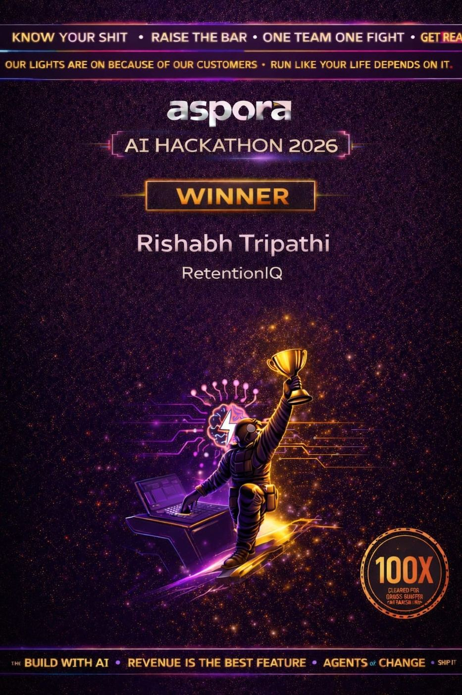
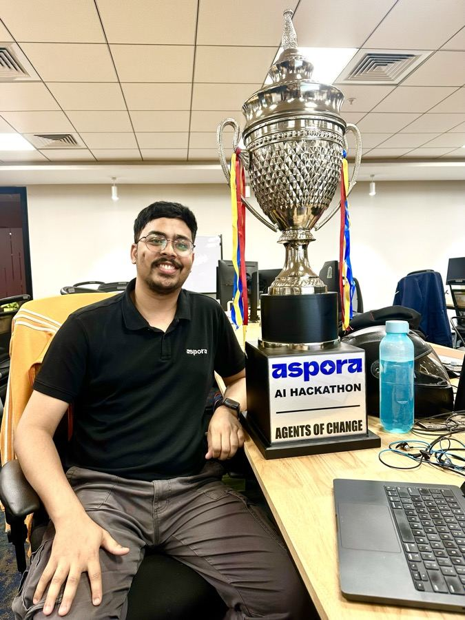
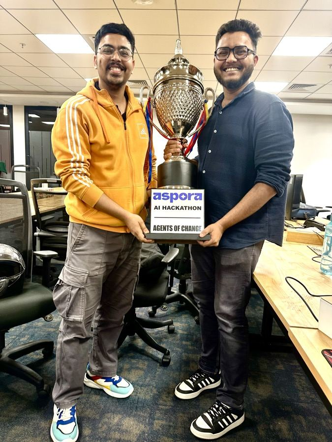
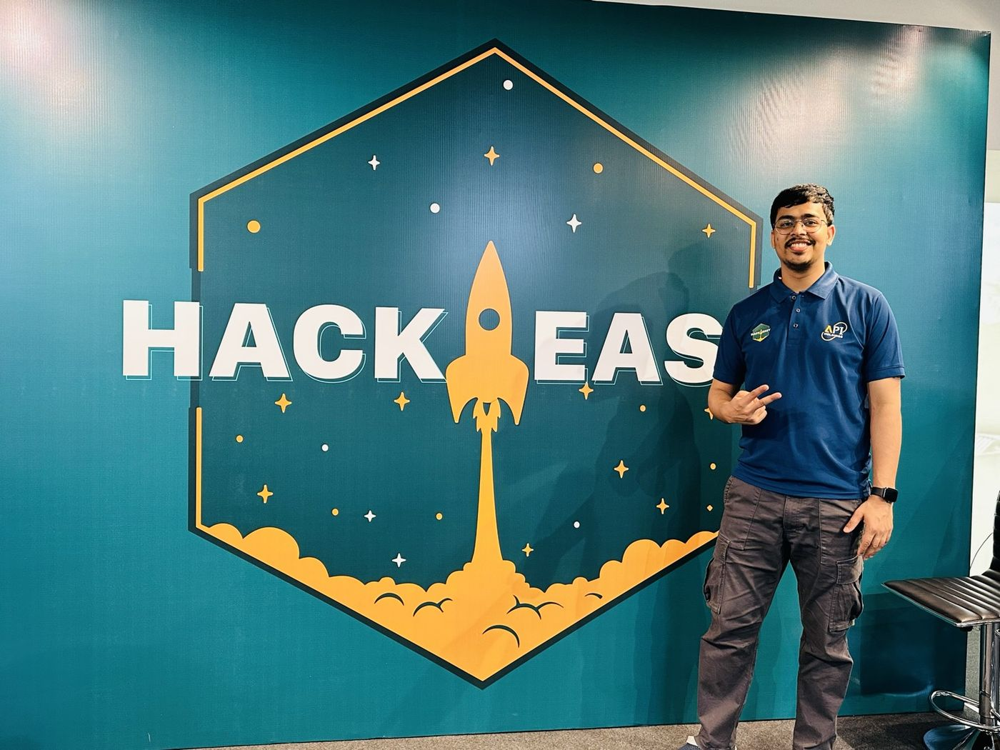
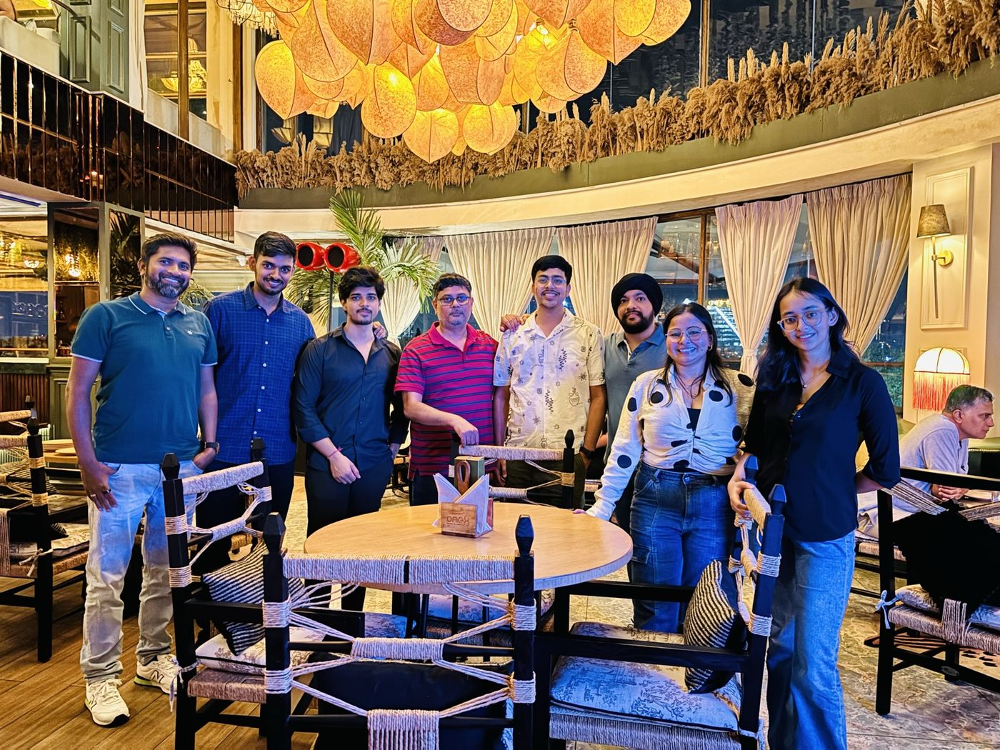
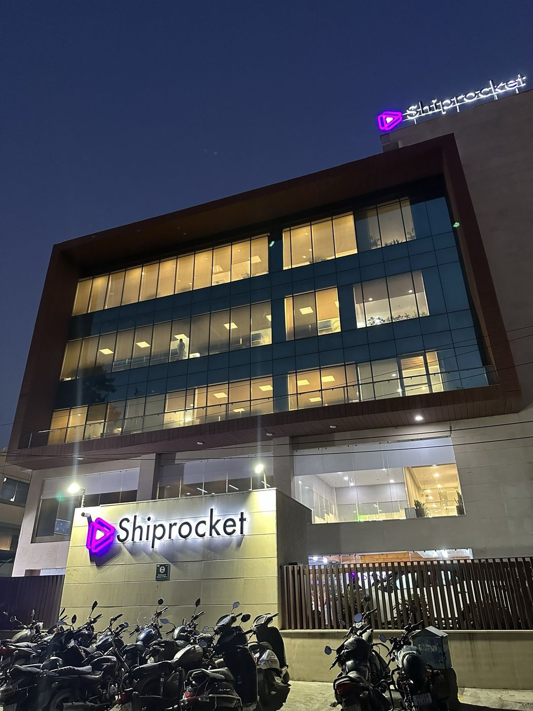
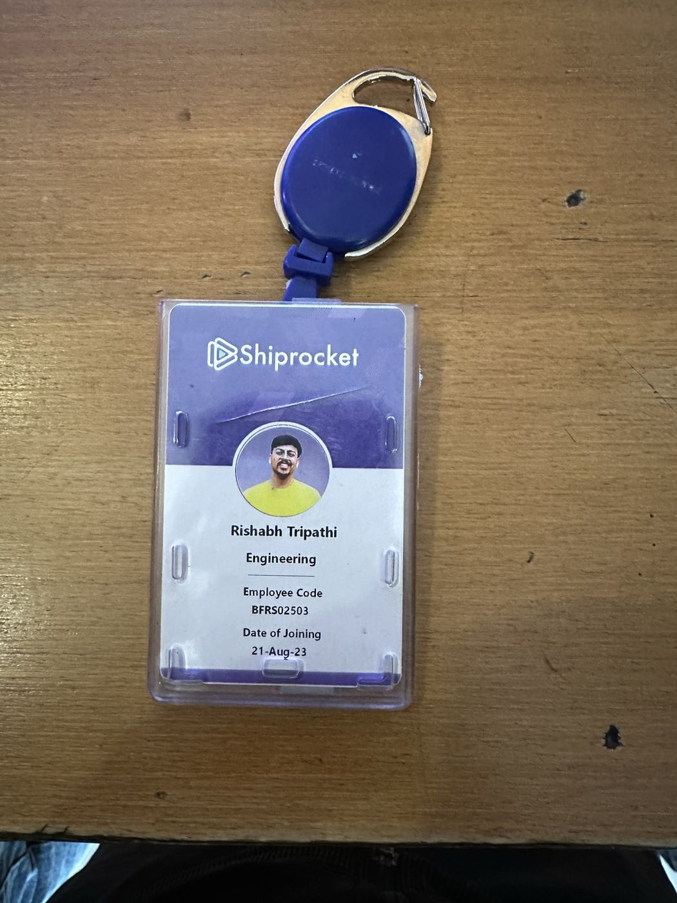
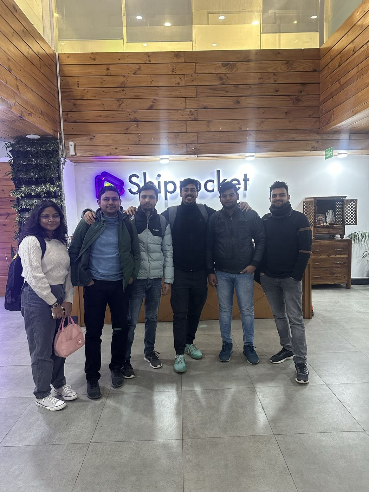
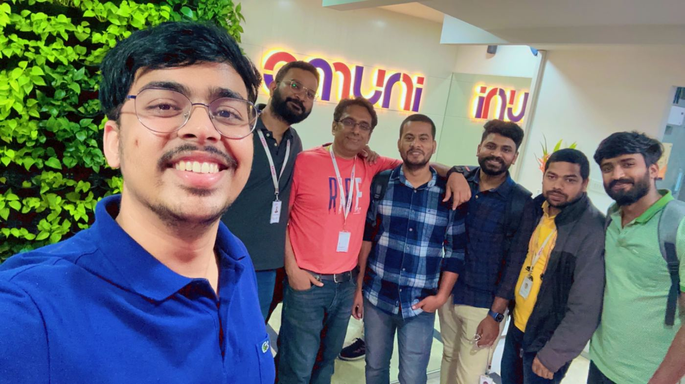
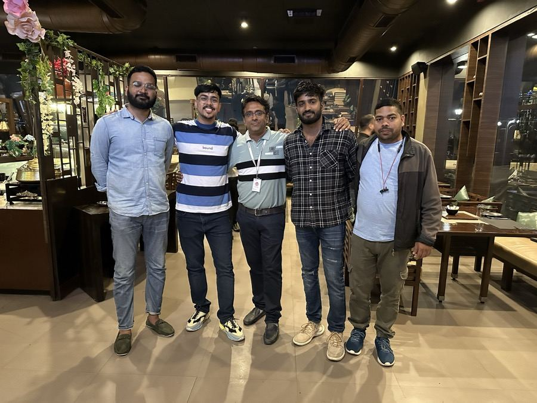

Senior DevOps Engineer with 6.5+ years designing, automating and securing AWS infrastructure — including a stint as a founding engineer building an entire platform from zero. I turn manual toil into self-service systems and cloud bills into cost wins.
I've spent 6.5+ years owning cloud infrastructure end-to-end — not just running it, but redesigning it. That includes a stint as a founding DevOps engineer, building an entire AWS platform from a blank slate: networking, Kubernetes, CI/CD, security, all from zero. I default to measuring my own work in numbers rather than activity — cost cuts, latency drops, hours saved — and I treat security and compliance as part of the job, not someone else's department. On-call, root-cause debugging, and mentoring engineers are all part of how I work, not extras.
Owning cloud and data-platform infrastructure end to end — architecture, cost, security, and on-call.



First engineering hire — built the company's entire cloud platform from a blank slate.
Kept a high-traffic healthcare platform's infrastructure cost-efficient and observable.


Built fulfillment infrastructure from scratch and scaled it to 99+ services in production.





Early-career cloud microservice delivery for a national identity-linked government system.
First hands-on cloud work — deploying and hosting on AWS.
Built for Aspora's ~89K churned-user base. Manually investigating why one user churned meant piecing together order history, KYC/SLA records, support conversations and internal Slack threads by hand — 30+ minutes per user. RetentionIQ replaces that with a tiered, interface-driven pipeline: a 6-CTE Redshift query classifies every churned user into a CPS (Churn Probability Score) risk tier, a collector layer pulls context from Redshift, Databricks (Intercom/Decagon conversations) and Slack, and a Claude-powered analysis layer — Sonnet for the highest-risk tier, Haiku for the rest — generates root-cause diagnosis and ranked retention actions, cutting the investigation to under 60 seconds per user.
Every data source, AI provider and storage backend sits behind a swappable TypeScript interface — the pipeline never imports a concrete implementation directly, so adding a new data source or swapping Claude for another model is a config change, not a rewrite. Built as a two-person team in a single 36-hour hackathon.
Took our Databricks spend from ~$418/day to ~$162/day — 61% lower, zero business impact — with no vendor discounts and no licensing tricks, just six measured engineering changes. Databricks' defaults optimize for developer convenience, not cost: serverless everywhere, performance-optimized pipelines, continuous fan-out jobs, and retry-heavy orchestration each make sense individually, but quietly compound into overspend at scale. Every number below was measured directly from system.billing.usage — no guessing, no vendor TCO calculators.
def has_new_bronze_data(bronze_table: str, silver_checkpoint_path: str) -> bool:
bronze_version = (
spark.sql(f"DESCRIBE HISTORY {bronze_table} LIMIT 1")
.collect()[0]["version"]
)
last_processed = read_checkpoint(silver_checkpoint_path)
return bronze_version > last_processed
if not has_new_bronze_data(BRONZE_TABLE, CHECKPOINT_PATH):
dbutils.notebook.exit("skip: no new bronze data")The single biggest realization: Databricks costs are rarely dominated by "big data" itself — they're dominated by orchestration patterns, retry behavior, cold starts, and fragmented workloads. Most teams don't have a Spark problem, they have a workload-shape problem. Read the full playbook →